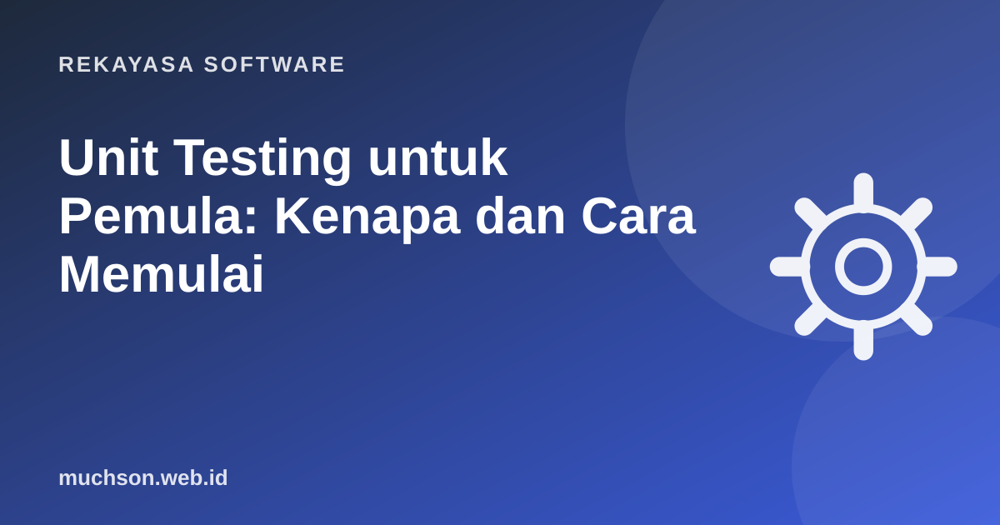

Beranda › Artikel › Rekayasa Software
Rekayasa SoftwareUnit Testing untuk Pemula: Kenapa dan Cara Memulai
Tanpa tes, setiap perubahan kode adalah taruhan: apakah fitur lama masih jalan? Kita baru tahu ketika pengguna mengeluh. Unit test adalah program kecil yang memeriksa program Anda, berjalan dalam hitungan detik, dan memberi tahu segera bila ada yang rusak.

Apa itu unit test?
Unit test menguji bagian terkecil yang masuk akal, biasanya satu fungsi atau satu kelas, secara terpisah dari database, jaringan, dan layar. Karena terisolasi, ia cepat dan hasilnya konsisten.
Pola Arrange, Act, Assert
Hampir semua tes punya tiga bagian: siapkan data (Arrange), jalankan yang diuji (Act), periksa hasilnya (Assert).
# diskon.py
def harga_setelah_diskon(harga, persen):
if not 0 <= persen <= 100:
raise ValueError("persen harus 0-100")
return round(harga * (100 - persen) / 100)
# test_diskon.py (jalankan: pytest)
import pytest
from diskon import harga_setelah_diskon
def test_diskon_sepuluh_persen():
# Arrange
harga = 200_000
# Act
hasil = harga_setelah_diskon(harga, 10)
# Assert
assert hasil == 180_000
def test_tanpa_diskon():
assert harga_setelah_diskon(50_000, 0) == 50_000
def test_persen_tidak_valid():
with pytest.raises(ValueError):
harga_setelah_diskon(50_000, 120)Versi JavaScript dengan Jest atau Vitest
// diskon.test.js (jalankan: npx vitest atau npx jest)
import { hargaSetelahDiskon } from './diskon.js';
test('diskon 10 persen', () => {
expect(hargaSetelahDiskon(200000, 10)).toBe(180000);
});
test('persen tidak valid melempar error', () => {
expect(() => hargaSetelahDiskon(50000, 120)).toThrow();
});Kasus apa yang perlu dites?
Mock: mengganti bagian yang lambat atau tidak pasti
Fungsi yang memanggil API pembayaran tidak boleh benar-benar menagih saat dites. Kita ganti API itu dengan tiruan (mock atau fake) yang mengembalikan jawaban yang kita tentukan.
from unittest.mock import Mock
def kirim_tagihan(gateway, jumlah):
hasil = gateway.charge(jumlah)
return "lunas" if hasil["status"] == "ok" else "gagal"
def test_tagihan_berhasil():
gateway = Mock()
gateway.charge.return_value = {"status": "ok"}
assert kirim_tagihan(gateway, 10000) == "lunas"
gateway.charge.assert_called_once_with(10000)Terlalu banyak mock membuat tes hanya menguji tiruan, bukan kode. Bila sebuah fungsi butuh lima mock untuk dites, itu tanda desainnya perlu disederhanakan.
Tes yang baik itu seperti apa?
- Cepat: ratusan tes selesai dalam hitungan detik.
- Mandiri: urutan menjalankan tidak memengaruhi hasil.
- Konsisten: tidak tergantung jam, acak, atau internet.
- Nama menjelaskan perilaku:
test_persen_tidak_valid, bukantest1. - Menguji perilaku, bukan detail implementasi: agar tes tidak rusak hanya karena kode dirapikan.
Bagaimana dengan TDD dan coverage?
TDD (Test-Driven Development) berarti menulis tes yang gagal dulu, lalu kode secukupnya agar lulus, lalu merapikan (siklus merah, hijau, refactor). Tidak wajib, tetapi bagus untuk logika bisnis yang rumit. Coverage (persentase baris yang dijalankan tes) berguna untuk menemukan bagian yang belum dites, tetapi angka 100% tidak menjamin tes yang bermakna.